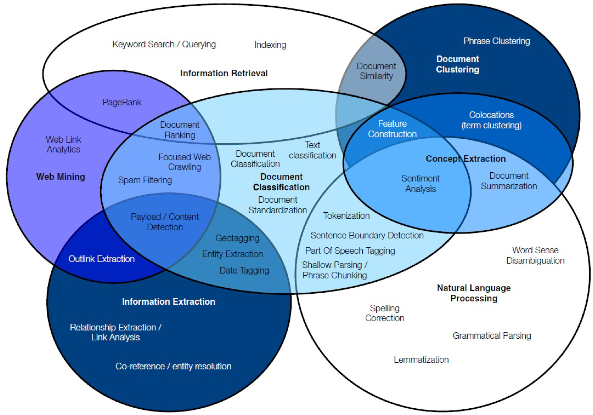
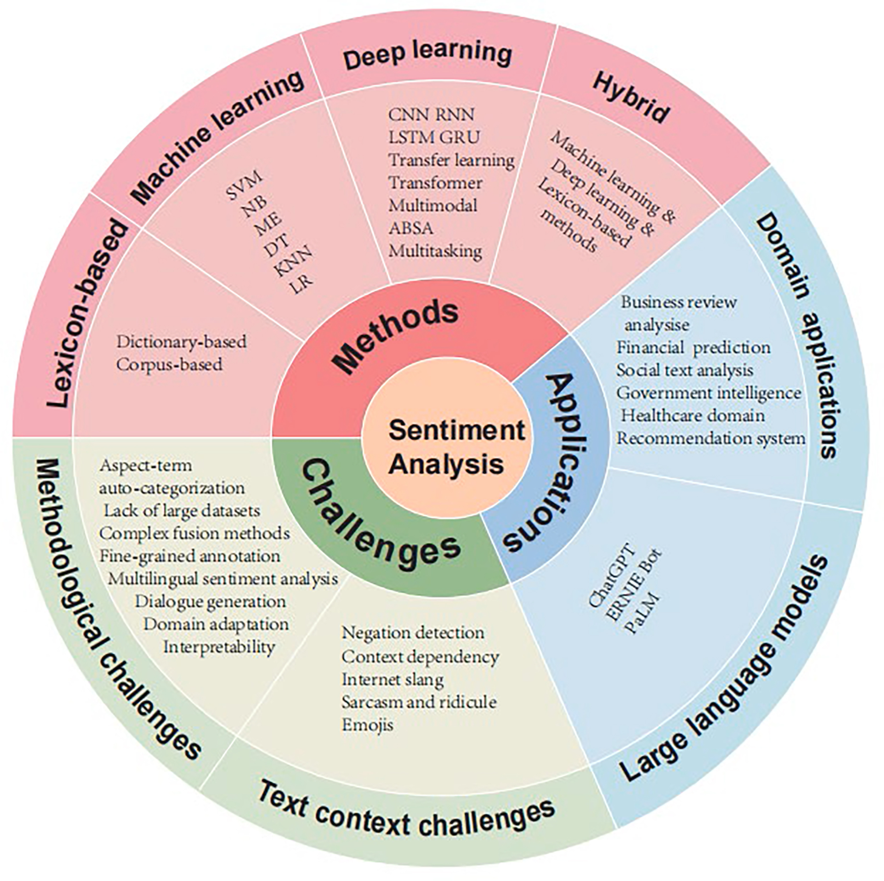
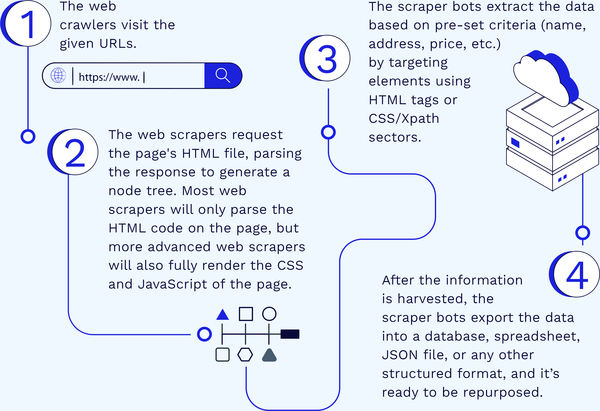
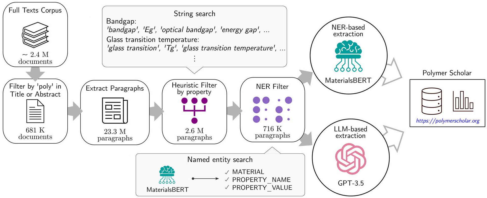
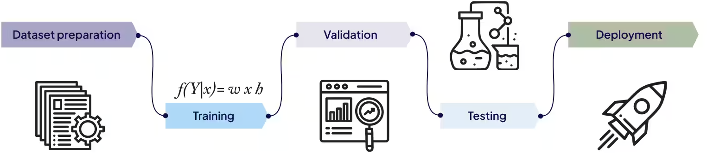
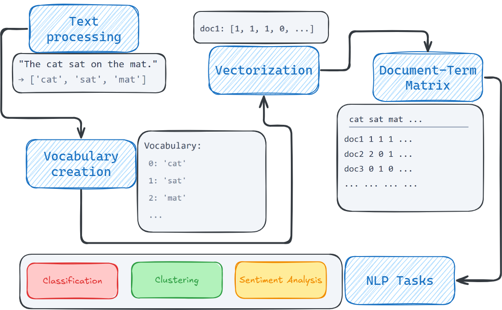
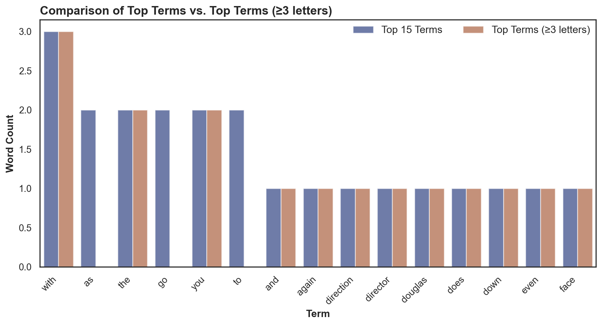

AD698 - Applied Generative AI
Language, Probability, and Generative Systems
Nakul R. Padalkar
Boston University
March 12, 2024
How to print Revealjs slides

Text Analytics and Mining
Text Analytics

Text Mining Process
Text Analytics
- Knowledge Discovery in Textual Databases
- Text Mining is a subfield of Text Analytics and Natural Language Processing (NLP)
- Text Analytics is a broader term that encompasses various techniques for analyzing and extracting insights from text data.
- Borrows from various fields such as information retrieval, machine learning, statistics, linguistics, and others. \begin{align} \text{Text Mining} &= \text{Information Extraction} + \nonumber \\ &\quad{} \text{Data Mining} + \text{Web Mining} \\ \text{Text Analytics} &= \text{Information Retrieval} + \text{Text Mining} \end{align}
Application Areas of Text Mining
- Information extraction
- Topic tracking
- Summarization
- Categorization
- Clustering
- Concept linking
- Question answering
Text Mining and Analytics Process
Sentiment Analysis

- Methods
- Lexicon-based
- Machine Learning
- Deep Learning
- Hybrid
- Applications
- Domain Applications
- Large Language Models
- Challenges
- Methodological Challenges
- Text Context Challenges
Sentiment Classification Algorithms
Types of Sentiment Analysis
- Aspects-based
- Emotion-based
- Fine-grained
- Intent-based


Web Mining, personalization, Social Analytics
Web Mining
- Web mining is the application of data mining techniques to discover patterns from the World Wide Web.
Web Content Mining (Web Scraping)

Web Usage Mining (Web Analytics)
- Web usage mining (Web analytics) is the extraction of useful information from data generated through Web page visits and transactions.

Text mining
Text Mining Concepts
- 85-90 percent of all corporate data is in some kind of unstructured form (e.g., text)
- Unstructured corporate data is doubling in size every 18 months
- Tapping into these information sources is not an option, but a need to stay competitive
Note
Text mining is the process of deriving high-quality information from text. High-quality information is typically derived through the devising of patterns and trends through means such as statistical pattern learning.
Knowledge Discovery from Web Data

Natural Language Processing (NLP)
What is Natural Language Processing (NLP)?
- Technology that enables computers to process, generate, and interact with language (e.g., text). Some key aspects:
- Learn useful representations: capture meaning in a structured way that can be used for downstream tasks (e.g., embeddings used to classify a document)
- Generate language: create language (e.g., text,
- code) for tasks like dialogue, translation, or question answering.
- Bridge language and action: Use language to perform tasks, solve problems, interact with environments (e.g., a code IDE)
General NLP Framework
Building NLP Systems
Rules: Manual creation of rules
def classify(x: str) -> str: sports_keywords = ["baseball", "soccer", "football", "tennis"] if any(keyword in x for keyword in sports_keywords): return "sports" else: return "other"Prompting: Prompting a language model w/o training
Building NLP Systems
- Fine-tuning: Machine learning from paired data \langle X, Y\rangle
Data Requirements for System Building
- Rules/prompting based on intuition: No data needed, but also no performance guarantees
- Rules/prompting based on spot-checks: A small amount of data with input X only
- Rules/prompting with rigorous evaluation: Development set with input X and output Y (e.g. 200-2000 examples). Additional held-out test set also preferable.
- Fine-tuning: Additional train set. More is often better - constant accuracy increase when data size doubles.
Natural Language Processing (NLP) Pipeline
Text Summarization
Natural Language Processing (NLP)
- Part-of-speech tagging
- Text segmentation
- Word sense disambiguation
- Syntactic ambiguity
- Imperfect or irregular input
- Speech acts
NLP Tasks
- Question answering
- Automatic summarization
- Natural language generation
- Natural language understanding
- Machine translation
- Foreign language reading
- Foreign language writing.
- Speech recognition
- Text-to-speech
- Text proofing
- Optical character recognition
Classical NLP

Deep Learning-based NLP

Modern NLP Pipeline
 Task / Output
Task / Output

Task / Output 
Modern NLP Pipeline
Task / Output 
Deep Learning NLP
Task / Output
Classification
Sentiment Analysis 
Entity Extraction
Topic Modeling
Document Similarity
Rule Based Sentiment
Note
Given a review (X) on a movie ratings website, decide whether its label (y) is positive (1), negative (-1) or neutral (0).
Natural Language Processing Pipeline
Natural Language Processing Pipeline
Sentiment Classification
Text Information
def read_xy_data(filename: str) -> tuple[list[str], list[int]]:
x_data = []
y_data = []
with open(filename, 'r') as f:
for line in f:
label, text = line.strip().split(' ||| ')
x_data.append(text)
y_data.append(int(label))
return x_data, y_data
x_train, y_train = read_xy_data('./data/sentiment-treebank/train.txt')
x_test, y_test = read_xy_data('./data/sentiment-treebank/dev.txt')
print("Document:-", x_train[0])
print("Label:-", y_train[0])Document:- The Rock is destined to be the 21st Century 's new `` Conan '' and that he 's going to make a splash even greater than Arnold Schwarzenegger , Jean-Claud Van Damme or Steven Segal .
Label:- 1Segmentation, Tokenization, and Cleaning
def extract_features(x: str) -> dict[str, float]:
features = {}
x_split = x.split(' ')
# Count the number of "good words" and "bad words" in the text
1 good_words = ['love', 'good', 'nice', 'great', 'enjoy', 'enjoyed']
bad_words = ['hate', 'bad', 'terrible',
'disappointing', 'sad', 'lost', 'angry']
2 for x_word in x_split:
if x_word in good_words:
features['good_word_count'] = features.get(
'good_word_count', 0) + 1
if x_word in bad_words:
features['bad_word_count'] = features.get(
'bad_word_count', 0) + 1
# The "bias" value is always one, to allow us to assign a "default" score to the text
3 features['bias'] = 1
return features
feature_weights = {'good_word_count': 1.0, 'bad_word_count': -1.0, 'bias': 0.5}- 1
- We list the words that represent sentiment,
- 2
- We count the number of good words and bad words in the text,
- 3
- We add a bias term to allow us to assign a “default” score to the text.
Decision ML Algorithm
def run_classifier(x: str) -> int:
score = 0
for feat_name, feat_value in extract_features(x).items():
score = score + feat_value * feature_weights.get(feat_name, 0)
if score > 0:
return 1
elif score < 0:
return -1
else:
return 0
def calculate_accuracy(x_data: list[str], y_data: list[int]) -> float:
total_number = 0
correct_number = 0
for x, y in zip(x_data, y_data):
y_pred = run_classifier(x)
total_number += 1
if y == y_pred:
correct_number += 1
return correct_number / float(total_number)Results
label_count = {}
for y in y_test:
if y not in label_count:
label_count[y] = 0
label_count[y] += 1
print(label_count)
train_accuracy = calculate_accuracy(x_train, y_train)
test_accuracy = calculate_accuracy(x_test, y_test)
print(f'Train accuracy: {train_accuracy}')
print(f'Dev/test accuracy: {test_accuracy}')
# Display 4 decimal
print(f'Train accuracy: {train_accuracy:.4f}')
print(f'Dev/test accuracy: {test_accuracy:.4f}'){1: 444, 0: 229, -1: 428}
Train accuracy: 0.4345739700374532
Dev/test accuracy: 0.4214350590372389
Train accuracy: 0.4346
Dev/test accuracy: 0.4214Model Evaluation
import random
def find_errors(x_data, y_data):
error_ids = []
y_preds = []
for i, (x, y) in enumerate(zip(x_data, y_data)):
y_preds.append(run_classifier(x))
if y != y_preds[-1]:
error_ids.append(i)
for _ in range(5):
my_id = random.choice(error_ids)
x, y, y_pred = x_data[my_id], y_data[my_id], y_preds[my_id]
print(f'{x}\ntrue label: {y}\npredicted label: {y_pred}\n')
find_errors(x_train, y_train)Like an episode of MTV 's Undressed , with 20 times the creativity but without any more substance ... indulgently entertaining but could have and should have been deeper .
true label: 0
predicted label: 1
What we get ... is Caddyshack crossed with the Loyal Order of Raccoons .
true label: 0
predicted label: 1
Unfortunately , One Hour Photo lives down to its title .
true label: -1
predicted label: 1
There are cheesy backdrops , ridiculous action sequences , and many tired jokes about men in heels .
true label: -1
predicted label: 1
True Hollywood Story .
true label: 0
predicted label: 1
Improving the Model
- What’s going wrong with my system?
- Modify the system (featurization, scoring function, etc.)
- Measure accuracy improvements, accept/reject change
- Repeat from 1
- Finally, when satisfied with dev accuracy, evaluate on test
Linguistic Barriers
- Low-frequency Words
- Conjugation
- Negation
- Metaphor
- Analogy
- Symbolic Languages
Tip
Can we think of solutions for these?
Probabilistic Topic Modeling
Probabilistic Topic Modeling

Machine Learning
- We want to estimate a function that will predict the label of a given text relatively well.
- The function f(x) can be linear or non-linear.
- It can be defined by humans or learned from data.

Bag of Words approach
What is Bag of Words?
- Text is treated as a collection (bag) of words
- Word order is discarded
- Each document becomes a vector of word counts

Why We Need Bag of Words
- Machines do not understand text
- Models require fixed-length numeric vectors
- Bag of Words is the first workable bridge between language and math
“Meaning is ignored; frequency is preserved.”
Text Cleaning
Despite suffering a sense-of-humour failure , The Man Who Wrote Rocky does not deserve to go down with a ship as leaky as this .
despite suffering a sense of humour failure the man who wrote rocky does not deserve to go down with a ship as leaky as this
- Lowercasing
- Removing punctuation
- Removing numbers
- Removing stopwords (optional)
Stanford Text Corpus Import
S1 [label=1]: With Dickens ' words and writer-director Douglas McGrath 's even-toned direction , a ripping good yarn is told .
S2 [label=0]: Maybe Thomas Wolfe was right : You ca n't go home again .
S3 [label=-1]: Despite suffering a sense-of-humour failure , The Man Who Wrote Rocky does not deserve to go down with a ship as leaky as this .
S4 [label=1]: It will guarantee to have you leaving the theater with a smile on your face .- Import all documents in the corpus.
- Make sure they are stored in the right format.
Tokenization
- Breaking text into units
- Split text into tokens (usually words)
- Simple whitespace tokenization is often enough
- More advanced methods exist (e.g., subword tokenization)
- Tokens are the building blocks for Bag of Words
- Example: “I love NLP!” \rightarrow [“I”, “love”, “NLP”]
Building CountVectorizer
from sklearn.feature_extraction.text import CountVectorizer
import pandas as pd
docs = [text for _, text in samples]
vectorizer = CountVectorizer(
lowercase=True,
stop_words=None # keep everything for teaching clarity
)
X = vectorizer.fit_transform(docs)
bow_df = pd.DataFrame(
X.toarray(),
columns=vectorizer.get_feature_names_out(),
index=[f"S{i+1}" for i in range(len(docs))]
)
bow_df.iloc[:, 0:8]| again | and | as | ca | deserve | despite | dickens | direction | |
|---|---|---|---|---|---|---|---|---|
| S1 | 0 | 1 | 0 | 0 | 0 | 0 | 1 | 1 |
| S2 | 1 | 0 | 0 | 1 | 0 | 0 | 0 | 0 |
| S3 | 0 | 0 | 2 | 0 | 1 | 1 | 0 | 0 |
| S4 | 0 | 0 | 0 | 0 | 0 | 0 | 0 | 0 |
Vocabulary Construction
- Vocabulary = unique words across all documents
- Vocabulary size grows quickly
- Rare words may be removed
- Vocabulary ≈ feature space
- Too large → sparse, inefficient models
Counting Words - Document-Term Matrix (DTM)
- Rows = documents
- Columns = vocabulary terms
- Values = word counts
This is the actual model input.
Word Frequencies

What BoW Gets Right
Strengths
- Simple and interpretable
- Fast to compute
- Works surprisingly well for:
- sentiment analysis
- topic classification
- spam detection
Limitations
- Ignores word order
- Ignores meaning
- Vocabulary explosion
- Sparse matrices
- Classic failure: “not good” ≈ “good”
BoW in Practice (Sentiment Analysis)
When Should You Use BoW?
When to Use Bag of Words
- Dataset is small to medium
- Interpretability matters
- You need a fast baseline
- Text is short and structured
When Not to Use Bag of Words
- Long documents
- Semantic nuance matters
- Context is critical
Key Takeaways
Bag of Words is not about language—it is about counting.
- Bag of words is a stepping stone to more advanced techniques:
- TF-IDF (weighting counts)
- Embeddings (learning meaning)
- Transformers (learning context)
Language, Probability, and Representation
- Language can be modeled as a probabilistic system
- Text analytics begins with representation, not models
- The same representation can support multiple NLP tasks
- Generative AI extends classical NLP rather than replacing it
Before we can generate language, we must first represent it.
From Text to Numbers
Why Representation Comes First
- Machines do not understand text — they operate on numbers
- Every NLP system starts by converting text into:
- counts
- weights
- probabilities
- vectors
- Bag of Words is the simplest bridge between language and mathematics
Representation choices directly affect: - interpretability
- scalability
- evaluation
- regulatory transparency
Generative vs. Discriminative
Two Ways to Think About Language Models
Generative modeling - Learns how language is produced - Models probability of text - Foundation of language models and LLMs
Discriminative modeling - Learns how to assign labels or decisions - Focuses on prediction accuracy - Common in business analytics tasks
Modern systems often combine both approaches.
Why Bag of Words Still Matters
- Provides a transparent baseline
- Enables:
- fast experimentation
- interpretable results
- defensible analysis (e.g., SEC filings)
- Serves as a comparison point for:
- TF–IDF
- embeddings
- transformer-based models
If you don’t understand Bag of Words, embeddings will feel like magic instead of engineering.
References
Gupta, S., Mahmood, A., Shetty, P., Adeboye, A., and Ramprasad, R. 2024. “Data Extraction from Polymer Literature Using Large Language Models,” Communications Materials (5), Nature Publishing Group, p. 269. (https://doi.org/10.1038/s43246-024-00708-9).
Talib, R., Hanif, M. K., Ayesha, S., and Fatima, F. 2016. “Text Mining: Techniques, Applications and Issues,” International Journal of Advanced Computer Science and Applications (7:11), The Science; Information Organization, pp. 414–418.

Social Analytics